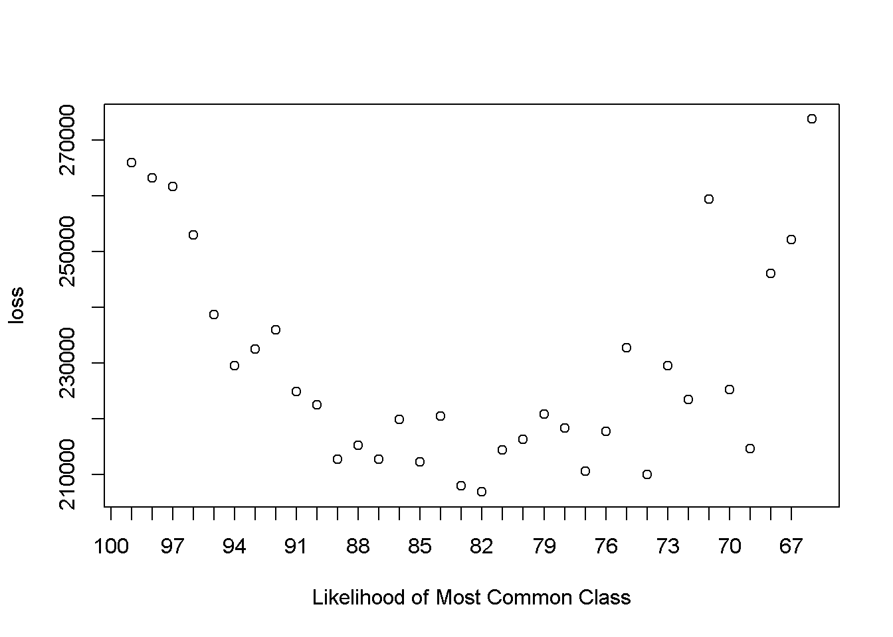

That title about sums it up. Let’s jump in. There is a room with 1000 people, each with some categorical class in \((A,B,C,D)\). This is unobserved. But, we do get to take a poll, so we can observe the aggregate shares of each class.
#unobserved
d <-
data.table(
"class" = sample(c("A","B","C","D")
,size = 1000
,prob = c(0.65,0.20,0.10,0.05)
,replace = TRUE)
)
# observed
shares <- d[ ,.N ,by = class]
shares[ ,share := N/sum(N)]
pander(shares,round = 2)| class | N | share |
|---|---|---|
| C | 97 | 0.1 |
| A | 662 | 0.66 |
| B | 185 | 0.18 |
| D | 56 | 0.06 |
I’ve found myself of being in roughly this position many times: the task is to make an individual-level prediction, but this is the only real information available. It’s a tough spot, and when I run this issue by other smart people, a common reaction is that the whole project it misguided. To that, I can only say: Defeatism is no plan. And, in fact, the highly-sophisticated, have-to-learn-it-in-grad-school econometric procedure known as BLP Estimation is actually a form of this problem, but the baseline assumption there is that someone has already done the hard data work of scrounging up some alternative-specific factors to do the estimation with the benefit of some actual information. But sometimes that isn’t the case.
It seems to me there are two basic options, that are both accurate, but in very different ways. The first is to predict everyone is a member of the most common class.
m1 <- rep(shares[share == max(share),class],1000)The second is to randomly select everyone into a predicted class based on the observed aggregate shares.
m2 <- sample(c("A","B","C","D"), size = 1000, prob = shares[,share], replace = TRUE)Which is preferred depends on if you care more about individual-level accuracy, or aggregate share accuracy. By individual-level accuracy, I mean how many times did you predict the correct class for an individual. You could call it the model’s “hit rate.” I think this is the most intuitive measure, and on it the first model does better.
d <-
data.table(
cbind("class" = unlist(d[,class])
,"pred1" = m1
,"pred2" = m2)
)
# individual -level accuracy
d[
,`:=`(
hit1 = ifelse(class == pred1,1,0)
,hit2 = ifelse(class == pred2,1,0)
)
]
pander(summary(d[,.(hit1,hit2)])[4,1:2]) # m1 > m2)| hit1 | hit2 |
|---|---|
| Mean :0.662 | Mean :0.199 |
But, when looking at the difference in predicted shares against the actual shares, the first model just seems silly. The second model has aggregate share accuracy.
shares1 <- d[,.N ,by = pred1]
shares1[,shares1 := N/sum(N)]
shares2 <- d[,.N ,by = pred2]
shares2[,shares2 := N/sum(N)]
shares[
shares1
,shares1 := i.shares1
,on = c(class = "pred1")
]
shares[is.na(shares1),shares1:=0]
shares[
shares2
,shares2 := i.shares2
,on = c(class = "pred2")
]
shares[is.na(shares2),shares2:=0]
pander(shares)| class | N | share | shares1 | shares2 |
|---|---|---|---|---|
| C | 97 | 0.097 | 0 | 0.198 |
| A | 662 | 0.662 | 1 | 0.095 |
| B | 185 | 0.185 | 0 | 0.653 |
| D | 56 | 0.056 | 0 | 0.054 |
So, maybe the savvy answer here is: the best prediction depends on which is the more important type of accuracy for a particular problem. However, people rarely like choosing between two extremes, so its helpful to have an explicit way to balance individual-level accuracy and aggregate share accuracy. One way to do that is through a loss function.
To generalize, say that we choose a predicted likelihood for the most common class that is at least as large as the actual aggregate share. One end of the spectrum is a 100% predicted likelihood for the most common class, a la model 1. The other end of the spectrum is a predicted likelihood for the most common class exactly equal to the actual aggregate share, a la model 2. I’m going to run a set of models with a predicted likelihood between those two extremes.
For all the other classes, let the predicted likelihood be equal to the same relative share, after fixing the likelihood of the most common class. That’s the most conceptually simple for me, even if the code is a little futzy.
m <- function(max_share){
max_class <- shares[share==max(share),class]
other_class <- shares[share!=max(share),class]
denom <- sum(shares[class==other_class[1],share] + shares[class==other_class[2],share] + shares[class==other_class[3],share])
p <-
c(
max_share
,shares[class==other_class[1],share]/denom*(1-max_share)
,shares[class==other_class[2],share]/denom*(1-max_share)
,shares[class==other_class[3],share]/denom*(1-max_share)
)
names(p) <-
c(
max_class
,other_class[1]
,other_class[2]
,other_class[3]
)
return(p)
}
#test: 99%
test <- m(0.99)
pander(test)| A | C | B | D |
|---|---|---|---|
| 0.99 | 0.00287 | 0.005473 | 0.001657 |
#test: 75%
test <- m(0.75)
pander(test)| A | C | B | D |
|---|---|---|---|
| 0.75 | 0.07175 | 0.1368 | 0.04142 |
#test 50%
test <- m(0.5)
pander(test)| A | C | B | D |
|---|---|---|---|
| 0.5 | 0.1435 | 0.2737 | 0.08284 |
I’m going to run all the potential models along that spectrum. For each, I’m going to calculate two things: the individual level hit rate and the difference in aggregate count. Both are squared, to treat positive errors and negative errors the same, and to punish larger errors on the margin more than smaller errors (in the same way as mean squared error).
loss <- rep(0,length(100:round((shares[,max(share)]*100),0)))
for (i in 100:round((shares[,max(share)]*100),0)){
j <- -i + 101
p <- m(i/100)
d[
,pred :=
sample(c("A","B","C","D")
,size = 1000
,prob =
c(p["A"],p["B"],p["C"],p["D"])
,replace = TRUE
)
]
d[
,hit := 0
]
d[
pred == class
,hit := 1
]
loss[j] <-
(1000 - d[,sum(hit)])^2 + #misses
(
(d[pred == "A",.N] - shares[class == "A",N])^2 +
(d[pred == "B",.N] - shares[class == "B",N])^2 +
(d[pred == "C",.N] - shares[class == "C",N])^2 +
(d[pred == "D",.N] - shares[class == "D",N])^2
)
}This loss function is U-shaped (with some noise from the random sampling), so there’s a nice minimum-loss point to choose.
plot(loss, xaxt = "n", xlab = "Likelihood of Most Common Class")
axis(1, at = 1:length(100:round((shares[,max(share)]*100),0))-1, labels = 100:round((shares[,max(share)]*100),0))
(100 - which(loss == min(loss)))/100## [1] 0.81Of course, this is just one loss function of many, so within this framework, you could set up any trade-off you want between individual-level accuracy and aggregate share accuracy.
Or, you know, get some real data.